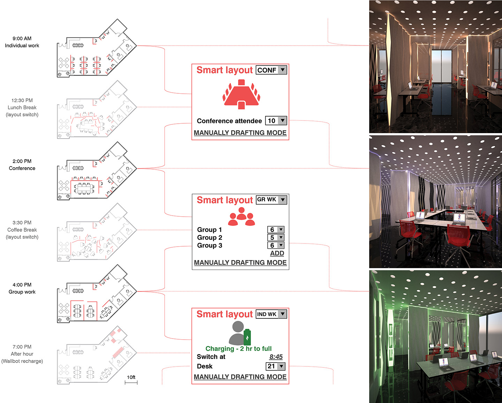

CONVERTIBLE OFFICE
Pinifarina on Schedule
If interior design primarily concerns the subdivision of a room into functional and coherent parts,
then the subdivision may not necessarily stay fixed when the parts are not concurrently active. This simple thought is crucial to our
design concept for the Miami office of the Italian design firm Pininfarina, as they find their 2,345-sqft room way too too small to
concurrently fit 21 staff desks, 2 independent office sections for the directors, and a conference space for all.
But why do we have to squeeze for every square inch when the subdivision can instantly adjust itself? Thanks to the concept of WALLBOT
developed by MIT Media Lab student Chun Lun Otto Ng in 2011, we introduced an alternative scheme with a smart room dividing system that instantly re-programs
the room layout according to the working timetable of the team, thus bringing Pinifarina on its schedule!
UM Fall 2015 Interior Design Studio, Instructor: Carmen Guerrero, Teammate: Yang Liao,
Client: Pinifarina, Site: Pinifarina office, Miami FL,
Technical Inspiration: WALLBOT, Chun Lun Otto Ng, MIT Media Lab;
